Products

Our range of Carbon Steel Seamless Pipes are widely acclaimed for their features such as high tensile strength,
smooth internal finish and hardness. Designed with precision, these pipes are ideal for marine applications, nuclear power and fossil fuel power plants,
transportation, petroleum plants and construction. These seamless carbon steel pipes are generally developed for energy-related applications involving oil and gas drilling.
Further, our range of carbon steel pipes can be availed in different material and dimensional specifications as per specific application .
CS SEAMLESS PIPES

Electric Resistance Welding (ERW) pipe is manufactured by rolling metal and then welding it longitudinally across its length.
Therefore ERW pipe have a welded joint in its cross-section.
ERW (Electric Resistance Welded) pipes are welded longitudinally, manufactured from Strip / Coil and can be manufactured upto 24” OD. ERW pipe cold formed from a ribbon of steel pulled through a series of rollers and formed into a tube which is fused through a electric charge.
It is mainly used for low/ medium pressure applications such as transportation of water / oil..
MS ERW PIPES
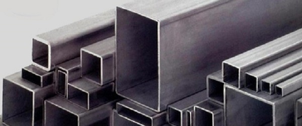
Mild Steel pipes are used for the supply of drinking water i.e. Plumbing, Firefighting and HVAC (Heating, Ventilation and Air Conditioning).
Along with this, these pipes are perfect to use in several industrial as well as engineering applications.
MS pipes are coated with paints, varnish or other metals that help not only protect them from rusting but also make them long-lasting and work under critical conditions.
These are generally used for drinking water supply i.e. Plumbing, Firefighting, HVAC.
MS SQUARE PIPES

Mild Steel pipes are used for the supply of drinking water i.e. Plumbing, Firefighting and HVAC (Heating, Ventilation and Air Conditioning).
Along with this, these pipes are perfect to use in several industrial as well as engineering applications.
MS pipes are coated with paints, varnish or other metals that help not only protect them from rusting but also make them long-lasting and work under critical conditions.
These are generally used for drinking water supply i.e. Plumbing, Firefighting, HVAC.
MS RECTANGULAR PIPES

Technically, every steel is an alloy, but not all of them have the “alloy steel” designation. To be called alloy steel,
other elements must be intentionally added to the iron and carbon composition.
Typically, no more than 5%. Stainless steel is the most popular high alloy, with at least 10.5% chromium by mass.
This ratio gives stainless steel more corrosion resistance.
ALLOY STEEL PIPES
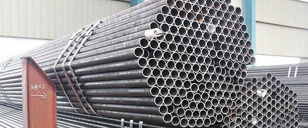
All power devices operate at high efficiencies required quality steel tubes, to guarantee their safe and long term operation.
These Tubes are called as Boiler Tubes. Boiler Tubes are specially manufactured to withstand high pressure and temperature.
Boiler tubes are used in energy type equipments like steam pipeline, boilers, super heaters etc.
BOILER TUBES

GI pipes are low carbon and zinc protected pipes respectively, used in a variety of industries.
Generally, a huge amount of carbon is present in iron, which is used for making pipes and other harder materials.
GI pipes or tubes contain a small amount of carbon (0.18% or less) steel. Low availability of carbon in GI pipes make them easy to use and less hard.
A steel with low amount of carbon, and can be transformed into various shapes as well as sizes for multiple purposes like tubing and pipe lining.
GI PIPES
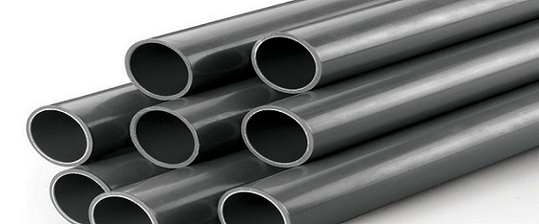
Mild Steel (MS) pipes are manufactured using low carbon (less than 0.25%) steel. Due to low carbon content the pipes do not harden and are easy to use.
As MS Pipes are made from mild steel they can easily be welded and formed in various shapes and sizes for pipelining and tubing purposes.
These are generally used for drinking water supply i.e. Plumbing, Firefighting, etc.
A steel with low amount of carbon, and can be transformed into various shapes as well as sizes for multiple purposes like tubing and pipe lining.
MS ROUND PIPES
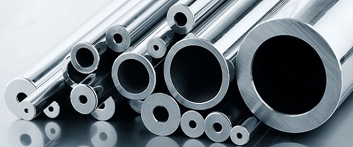
Stainless steel is a versatile material comprised of a steel alloy and a small percentage of chromium.
Addition of chromium adds to the material’s corrosion resistance,
a trait that earned stainless steel its name.
Stainless steel is used where high corrosion resistance and decoration is priority.
Because stainless steel is also low-maintenance, oxidation resistant,
it is frequently used in a large array of applications, especially in piping and tubing manufacturing.
SS ROUND PIPES
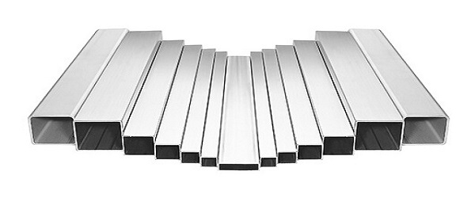
Stainless Steel Square Tube is a versatile choice for a more lightweight means of structural support.
Square tubing best suited for structural applications where extreme pressure is not involved or for internal applications where aesthetic appearance is not important.
Excellent weight-bearing properties, high corrosion resistance, excellent durability, high strength-to-weight ratio and non-magnetic.
Lightweight structural applications, plumbing, gas lines.
SS SQUARE PIPES
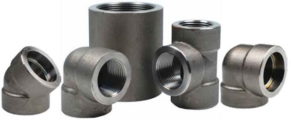
Forged Fitting is a processing method by use of forging press put pressure on metal blanks, making it produce plastic deformation in order to obtain certain mechanical properties, a certain shape and sizes.
Forging can eliminate the as-cast loose defect produced during metal smelting process, and optimize the microstructure.
Meanwhile because of the intact metal flow forging will be better than that of castings in same material.
FORGED FITTING
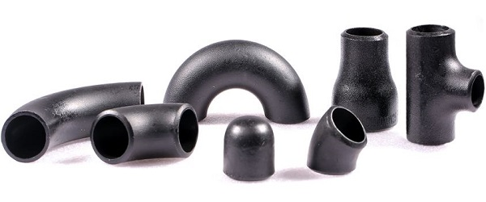
A butt weld pipe fitting is designed to be welded on site at its end(s) to connect pipe(s) together and allow change in direction or pipe diameter, or branching or ending.
This fitting then becomes part of a system for transporting fluids (oil, gas, steam, chemicals, …) in a safe and efficient manner, over short or long.
Buttweld pipe fittings comprises of long radius elbow, concentric reducer, eccentric reducers and Tees.
BUTT WELD FITTING

Stainless fasteners are used to fight corrosion. We have SS grade like 202, 304, 309, 310, 316, 410, 420, 430.
Contrary to popular belief stainless steel fasteners are not stronger but they do provide superior resistance to rust, staining and corrosion.
When looking for fasteners to fight the outdoor elements, especially water, stainless steel nuts, bolts, screws and washers should be your first choice.
SS BOLT/NUT

Inconel® bolts, like Inconel 600, 601, 625, 686, 718, 750, 800, 825 bolts, are a family of nickel-chromium-molybdenum alloys used for their high strength at elevated temperatures and good corrosion resistance.
Because of its high thermal stability, Inconel can be used in service temperatures ranging from cryogenic to 2200°F (982°C).
The high alloy content of Inconel bolts enable it to withstand a wide variety of severe corrosive environments.
INCONEL BOLT/NUT

Hastelloy fasteners are ideally suited for a wide variety of medium to severe corrosive acid environments. We have grades like C4, C22, C276 etc.
The most common grade for Hastelloy fasteners is Hastelloy C276, which is the one of the most versatile of the corrosion resistant nickel alloys – exceeding that of Inconel or Monel.
Hastelloy fasteners are also available in other specialty grades that can address more niche corrosion issues. Hastelloy is often used for applications involving:
HASTELLOY BOLT/NUT

Monel® bolts, like Monel F400, F467, and F500, are made from a nickel-copper alloy and exhibit high strength, toughness and good corrosion resistance over a wide temperature range.
An outstanding characteristic of Monel bolts is that they offer exceptional resistance to hydrofluoric acid, a particularly tough acid to deal with, in all concentrations up to the boiling point.
For hydrofluoric acid applications Monel bolts are perhaps the most resistant of all commonly used specialty alloys.
MONEL BOLT/NUT

Titanium bolts are made with aircraft grade Titanium Alloy. We serve grades GR2, GR5, GR7 etc. One of the outstanding benefits of Titanium bolts is that they forge theheads for superior strength.
The threads are then rolled to produce greater fatigue strength and reduce galling. Use good qualitynuts on titanium bolts. Titanium recommends AN or MS nuts on titanium bolts.
Marine and pool environments rely on titanium screws.
TITANIUM BOLT/NUT

Duplex 2205, 31803 and Super Duplex 32750, 32760 stainless steel bolts are characterized by their high yield strength,
which is twice that of the annealed yield strength of typical austenitic stainless steels, like 304 and 316 stainless steel bolts. Because of this,
Duplex 2205 and Super Duplex 32750 steel are some of the most common grades of duplex used for bolts with Super Duplex 2507 bolts being the more corrosion resistant grade of the two.
DUPLEX BOLT/NUT
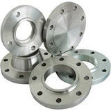
Mild steel is a type of carbon steel with a low amount of carbon – it is actually also known as "low carbon steel".
Although ranges vary depending on the source, the amount of carbon typically found in mild steel is 0.05% to 0.25% by weight,
whereas higher carbon steels are typically described as having a carbon content from 0.30% to 2.0%.
Mild steel has a relatively low tensile strength, but it is cheap and easy to form.
MS FLANGES
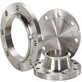
Stainless steel usually contains 10 to 30 percent chromium.
In conjunction with low carbon content, chromium imparts remarkable resistance to corrosion and heat.
Other elements, such as nickel, molybdenum, titanium, aluminum, niobium, copper, nitrogen, sulfur, phosphorus, or selenium,
added to increase corrosion resistance, enhance oxidation resistance, and impart special characteristics.
SS FLANGES
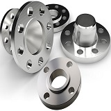
Technically, every steel is an alloy, but not all of them have the “alloy steel” designation. To be called alloy steel,
other elements must be intentionally added to the iron and carbon composition. A small percentage of alloying elements —
typically, no more than 5%. Stainless steel is the most popular high alloy, with at least 10.5% chromium by mass.
This ratio gives stainless steel more corrosion resistance.
AS FLANGES
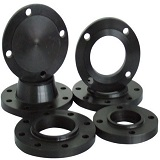
Carbon steel is an alloy consisting of iron and carbon. Several other elements are allowed in carbon steel, with low maximum percentages.
These elements are manganese, with a 1.65% maximum, silicon, with a 0.60% maximum, and copper, with a 0.60% maximum. Other elements may be present in quantities too small to affect its properties.
In general, increase in the amount of carbon reduces ductility but increase tensile strength. Cs flanges are used in low presssure applications.
CS FLANGES
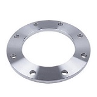
Plate flanges are special types of flanges that have raised face and back ups.
Made from quality mill plates, these flanges have high weldability & hardenability.
Our range of plate flanges can be availed in different dimensional specifications depending upon the requirements and their applications.
Plate flanges used in low-pressure applications because of few benefits like superior grain structure as compared to forging flanges, extended service life and due to normal maintenance cost as well.
PLATE FLANGES
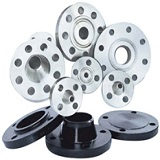
Forged flanges are used as a connection component for pipes, valves, pumps and other equipment to form a pipework system.
They provide easy access for cleaning, inspection, modification or repairs. Forged flanges are used in high pressure applications and widely used in oil industries
Flanges are usually welded onto pipes or screwed onto a threaded pipe end and then joined with bolts to make the connection.
Forged flanges are stronger than plate flanges and used in high pressure applications.
FORGED FLANGES
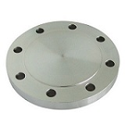
Blind flanges are used to seal the end of piping systems or pressure vessel openings.
They are commonly used for testing the flow of gas or liquid through a pipe or vessel.
Blind pipe flanges also allow for easy access to the pipe in case work must be done inside the line.
They are used for high pressure applications and widely used in oil and gas industries.
BLIND FLANGES
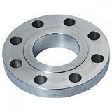
Slip on flanges are a popular type of pipe flanges. As made obvious by their name, these pipe flanges slip over the pipe.
These are type of flanges that slide over the end of piping and then welded in place.
These flanges are ideal for lower pressure applications.
These are easily fitted and welded into different pipes.
Welding reduces fabrication costs of these pipes.
SLIP FLANGES
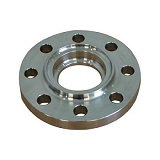
Socket weld flanges are typically used on smaller sizes of high pressure pipes.
These pipe flanges are attached by inserting the pipe into the socket end and applying fillet weld around the top.
This allows for a smooth bore and better flow of the fluid or gas inside of the pipe.
Socket weld flanges were initially developed for use on smaller sizes of pipe at higher pressure ratings.
SOCKET WELD
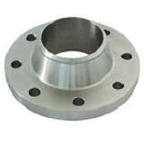
Weld neck flanges are pipe flanges attach by welding the pipe to the neck of the flange.
This transfers stress from the flange to the pipe instead.
It also reduces the stress concentration from the base of the hub.
Weld neck flanges are often used for applications where high pressure is a factor.
The inside diameter of the flange is designed to match the pipe's inside diameter.
WELD NECK
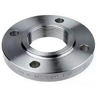
Threaded flanges are similar to slip-on pipe flanges except the bore of threaded pipe flange has tapered threads.
Threaded pipe flanges are used with pipes that have external threads.
The benefit of these pipe flanges is that it can be attached easily without welding since threaded.
Threaded pipe flanges are often used for small diameter, high pressure requirements.
THREADED
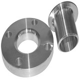
Lap joint pipe flanges slide directly over the pipe and are most commonly used with stub end fittings.
A pipe is usually welded to the Stub End and the Lap Joint pipe flange is free to rotate around the stub end.
The benefit of this is that there will not be any issues with bolt hole alignment.
Lap Joint pipe flanges are often used for applications that require frequent dismantling.
LAP JOINT